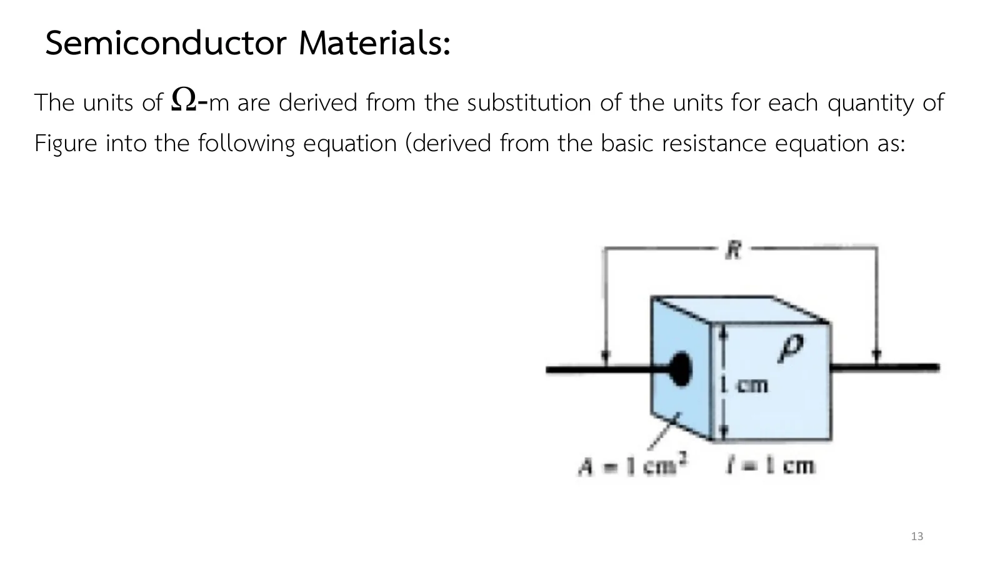
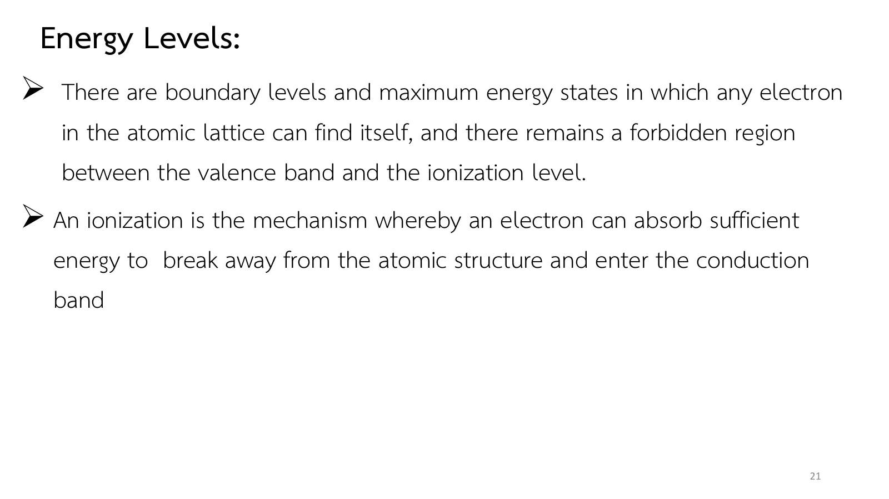

วัสดุสารกึ่งตัวนำ: สภาพต้านทาน พันธะโควาเลนต์ และแถบพลังงาน Semiconductor materials: resistivity, covalent bonds and energy bands
Semiconductor materials and energy levels Resistivity, covalent bonds and energy bands
ทองแดงนำไฟฟ้าดีกว่าซิลิคอนบริสุทธิ์ราวห้าหมื่นล้านเท่า แต่ชิปทั้งโลกกลับทำจากซิลิคอน (Si) และทรานซิสเตอร์ยุคแรกทำจากเจอร์เมเนียม (Ge) เหตุผลไม่ได้อยู่ที่ว่าวัสดุเหล่านี้นำไฟฟ้าดีแค่ไหน แต่อยู่ที่ว่าการนำไฟฟ้าของมันเปลี่ยนได้มากเพียงใด ด้วยความร้อน ด้วยแสง และในหน้าถัดไปด้วยอะตอมแปลกปลอมเพียงหนึ่งในสิบล้านส่วน หน้านี้ส่องเข้าไปในสารกึ่งตัวนำ (semiconductor) สามระดับ: วางวัสดุบนไม้บรรทัดสภาพต้านทาน (ส่วน A) ดูพันธะโควาเลนต์ (covalent bond) ในผลึกแตกเมื่อร้อนขึ้น (ส่วน B) และดูแถบพลังงานที่บอกว่าอิเล็กตรอนต้องใช้พลังงานเท่าไรจึงหลุดเป็นอิสระ (ส่วน C) แล้วจบด้วยโจทย์ข้อ 1 และแบบฝึกเพิ่ม (สไลด์บทที่ 1 หน้า 12–22 · Boylestad หัวข้อ 1.2–1.4)
Copper conducts some fifty billion times better than pure silicon, yet chips are made of silicon (Si), and the early transistors were made of germanium (Ge). The reason is not how well these materials conduct but how much their conduction can be changed: by heat, by light, and, on the next page, by one foreign atom in ten million. This page looks inside a semiconductor at three levels: materials on a resistivity ruler (section A), covalent bonds in a crystal breaking as it warms (section B), and the energy bands that set how much energy an electron needs to break free (section C), then problem 1 and more practice (chapter 1 slides, pp. 12–22; Boylestad sections 1.2–1.4).
ประเด็นสำคัญของหน้านี้
- สภาพต้านทาน (resistivity, \(\rho\)) ใช้เทียบวัสดุโดยไม่ขึ้นกับขนาด คือความต้านทานของลูกบาศก์ด้านละ 1 cm ทองแดงราว \(10^{-6}\ \Omega\)-cm ซิลิคอนบริสุทธิ์ราว \(50\times10^3\ \Omega\)-cm ไมการาว \(10^{12}\ \Omega\)-cm (สไลด์หน้า 12–14)
- ผลึกเดี่ยวและความบริสุทธิ์: Ge และ Si เรียงอะตอมเป็นโครงผลึกแบบเพชรซ้ำกันทั้งก้อน และทำให้บริสุทธิ์ได้มาก ซึ่งจำเป็นเพราะสิ่งเจือปนเพียงเล็กน้อยเปลี่ยนสมบัติทางไฟฟ้าได้มาก (สไลด์หน้า 14–15)
- พันธะโควาเลนต์: Si (14 อิเล็กตรอน) และ Ge (32 อิเล็กตรอน) มีเวเลนซ์อิเล็กตรอน 4 ตัว แต่ละตัวใช้ร่วมกับอะตอมข้างเคียงหนึ่งอะตอม รวมสี่อะตอม ความร้อนหรือแสงทำให้บางพันธะแตก ได้อิเล็กตรอนอิสระกับโฮล (hole) เป็นคู่ ที่อุณหภูมิห้องซิลิคอนบริสุทธิ์มีพาหะอิสระราว \(1.5\times10^{10}\) ต่อ cm³ เจอร์เมเนียมราว \(2.5\times10^{13}\) (สไลด์หน้า 16–18)
- สัมประสิทธิ์อุณหภูมิเป็นลบ: ร้อนขึ้นพาหะอิสระเพิ่ม สารกึ่งตัวนำจึงนำไฟฟ้าดีขึ้น ตรงข้ามกับตัวนำที่ความต้านทานเพิ่มเมื่อร้อน (Boylestad หัวข้อ 1.3)
- แถบพลังงาน: อิเล็กตรอนต้องได้พลังงานอย่างน้อย \(E_g\) จึงข้ามจากแถบเวเลนซ์ไปแถบนำได้ พลังงานวัดเป็นอิเล็กตรอนโวลต์ (electron volt, eV) ฉนวน \(E_g > 5\) eV ซิลิคอน 1.1 eV เจอร์เมเนียม 0.67 eV แกลเลียมอาร์เซไนด์ (GaAs) ราว 1.4 eV ส่วนตัวนำมีแถบซ้อนกัน ที่ 0 K เวเลนซ์อิเล็กตรอนทุกตัวของสารกึ่งตัวนำอยู่ในแถบเวเลนซ์ (สไลด์หน้า 19–22)
Key points of this page
- Resistivity (\(\rho\)) compares materials whatever their size: it is the resistance of a 1 cm cube. Copper is about \(10^{-6}\ \Omega\)-cm, pure silicon about \(50\times10^3\ \Omega\)-cm, mica about \(10^{12}\ \Omega\)-cm (slides pp. 12–14).
- Single crystals and purity: Ge and Si repeat the same diamond lattice through the whole piece, and they can be made very pure, which matters because a tiny impurity changes the electrical properties a lot (slides pp. 14–15).
- Covalent bonds: Si (14 electrons) and Ge (32 electrons) have 4 valence electrons, each shared with one of four neighbouring atoms. Heat or light breaks a few bonds, freeing an electron and leaving a hole. At room temperature pure silicon has about \(1.5\times10^{10}\) free carriers per cm³, germanium about \(2.5\times10^{13}\) (slides pp. 16–18).
- A negative temperature coefficient: warmer means more free carriers, so a semiconductor conducts better, the opposite of a conductor, whose resistance rises with heat (Boylestad, section 1.3).
- Energy bands: an electron needs at least \(E_g\) to jump from the valence band to the conduction band. Energy is measured in electron volts (eV): insulators have \(E_g > 5\) eV, silicon 1.1 eV, germanium 0.67 eV, gallium arsenide (GaAs) about 1.4 eV, while in conductors the bands overlap. At 0 K every valence electron of a semiconductor is in the valence band (slides pp. 19–22).
ตัวนำ ฉนวน และสิ่งที่อยู่ตรงกลาง
Conductors, insulators and what lies between
สไลด์หน้า 12 แบ่งวัสดุเป็นสามกลุ่มตามความยอมให้ประจุไหล: ตัวนำให้กระแสไหลได้มากแม้แรงดันไม่สูง ฉนวนแทบไม่ให้ไหลเลย ส่วนสารกึ่งตัวนำอยู่ระหว่างสองขั้วนี้ แต่จะเทียบให้ยุติธรรมต้องตัดเรื่องขนาดทิ้งก่อน เพราะลวดเส้นยาวย่อมต้านทานมากกว่าเส้นสั้นที่ทำจากวัสดุเดียวกัน
สไลด์หน้า 13 จึงใช้ลูกบาศก์ด้านละ 1 cm เป็นมาตรฐาน ความต้านทานระหว่างสองหน้าที่อยู่ตรงข้ามกันของลูกบาศก์นี้คือสภาพต้านทาน (resistivity, \(\rho\)) ของวัสดุ มีหน่วย Ω-cm ยิ่ง \(\rho\) สูง วัสดุยิ่งนำไฟฟ้าได้น้อย
Slide p. 12 sorts materials into three groups by how readily they let charge flow: a conductor passes a generous current at a modest voltage, an insulator hardly any, and a semiconductor sits between the two. A fair comparison must first take size out of the picture, since a long wire resists more than a short one of the same material.
So slide p. 13 takes a 1 cm cube as the standard. The resistance between two opposite faces of that cube is the resistivity \(\rho\) of the material, in Ω-cm: the higher \(\rho\), the worse the material conducts.
![Slide 12, Semiconductor Materials: conductor is applied to any material that will support a generous flow of charge when a voltage source of limited magnitude is applied across its terminals. Insulator is a material that offers a very low level of conductivity under pressure from an applied voltage source. Semiconductor, therefore, is a material that has a conductivity level somewhere between the extremes of an insulator and a conductor. Quote: The higher the conductivity level, the lower the resistance level; the term resistivity (ρ, Greek letter rho) is often used when comparing the resistance levels of materials.](slides/ch1/p12.webp)

↓ ส่วน A: วางวัสดุสี่ชนิดบนไม้บรรทัดเดียวกัน แล้วปรับความยาวและหน้าตัดของแท่งดูความต้านทาน
↓ Section A: put four materials on one ruler, then change the length and cross-section of the bar and watch its resistance
สภาพต้านทาน: วัสดุสี่ชนิดบนไม้บรรทัดเดียวกัน
Resistivity: four materials on one ruler
ตารางในสไลด์หน้า 14 คือไม้บรรทัดที่กำลังจะใช้: ทองแดงราว \(10^{-6}\) Ω-cm เจอร์เมเนียม 50 Ω-cm ซิลิคอน \(50\times10^3\) Ω-cm และไมกา \(10^{12}\) Ω-cm สไลด์ยังให้เหตุผลข้อสำคัญที่ Ge และ Si ได้รับความสนใจ: ทำให้บริสุทธิ์ได้สูงมาก เลือกวัสดุทีละชนิด แล้วนับว่ากระแสที่ 1 V ลดลงกี่อันดับขนาดทุกครั้งที่เปลี่ยน
The table of slide p. 14 is the ruler you are about to use: copper about \(10^{-6}\) Ω-cm, germanium 50 Ω-cm, silicon \(50\times10^3\) Ω-cm and mica \(10^{12}\) Ω-cm. The slide also gives a key reason why Ge and Si got so much attention: they can be made to a very high purity. Pick the materials one by one and count how many orders of magnitude the current at 1 V drops at each change.

ค่าสภาพต้านทานของวัสดุในตารางต่างกันถึง \(10^{18}\) เท่า (18 อันดับขนาด) ไม้บรรทัดด้านบนจึงใช้สเกลลอการิทึม ตัวเลขบนไม้บรรทัดห่างกันทีละ 1000 เท่า ขีดสั้นทีละ 10 เท่า เลือกวัสดุ แล้วปรับความยาวและพื้นที่หน้าตัดของแท่ง ดูความต้านทานและกระแสเมื่อต่อกับแหล่งจ่าย 1 V
The resistivities in the table span 18 orders of magnitude, so the ruler on top is logarithmic: each labelled tick is 1000 times the last, each short tick a factor of 10. Pick a material, then change the length and cross-section of the bar, and watch its resistance and the current it would take from a 1 V source.
สี่อิเล็กตรอน สี่เพื่อนบ้าน
Four electrons, four neighbours
ความบริสุทธิ์อย่างเดียวยังไม่พอ สไลด์หน้า 15 ชี้ว่า Ge และ Si เรียงอะตอมเป็นโครงผลึกแบบเพชรซ้ำกันทั้งก้อน เรียกว่าโครงสร้างผลึกเดี่ยว (single crystal) และรูปแบบนี้แทบไม่เปลี่ยนแม้เติมสารเจือในภายหลัง
สไลด์หน้า 16 เปิดดูอะตอม: เจอร์เมเนียมมีอิเล็กตรอน 32 ตัว ซิลิคอน 14 ตัว แต่ทั้งคู่มีอิเล็กตรอนวงนอกสุด (เวเลนซ์อิเล็กตรอน, valence electron) 4 ตัว ซึ่งดึงออกได้ง่ายที่สุดในอะตอม สไลด์หน้า 17 แสดงว่าในผลึก เวเลนซ์อิเล็กตรอนแต่ละตัวใช้ร่วมกับอะตอมข้างเคียงหนึ่งอะตอม ครบสี่อะตอม การใช้อิเล็กตรอนร่วมกันแบบนี้เรียกว่าพันธะโควาเลนต์ อิเล็กตรอนที่อยู่ในพันธะไม่ได้ไปไหน ผลึกบริสุทธิ์ที่เย็นจึงแทบไม่นำไฟฟ้า
Purity alone is not enough. Slide p. 15 points out that Ge and Si repeat the same diamond lattice through the whole piece, a single-crystal structure, and that the pattern barely changes when impurities are added later.
Slide p. 16 opens the atom: germanium has 32 electrons and silicon 14, but both have 4 in the outermost (valence) shell, the easiest ones in the atom to remove. Slide p. 17 shows that in the crystal each valence electron is shared with one neighbouring atom, four neighbours in all. This sharing is covalent bonding. Electrons held in bonds go nowhere, so a cold, pure crystal hardly conducts.
![Slide 15, Semiconductor Materials: one complete pattern is called a crystal and the periodic arrangement of the atoms a lattice. For Ge and Si the crystal has the three-dimensional diamond structure of the figure. Any material composed of repeating crystal structures of the same kind is called a single-crystal structure. For semiconductor materials of practical application in the electronics field, this single-crystal feature exists, and, in addition, the periodicity of the structure does not change significantly with the addition of impurities in the doping process. The figure is a tetrahedron of four atoms bonded to a central atom: Ge and Si single-crystal structure.](slides/ch1/p15.webp)
![Slide 16, Semiconductor Materials: the Bohr models of the two most commonly used semiconductors, germanium and silicon, are shown in the figure. As indicated by Fig. (a), the germanium atom has 32 orbiting electrons, while silicon has 14 orbiting electrons. In each case, there are 4 electrons in the outermost (valence) shell. The potential (ionization potential) required to remove any one of these 4 valence electrons is lower than that required for any other electron in the structure. Figure: the atomic structure of silicon and germanium, nucleus, shells, orbiting electrons, valence electrons (4 for each).](slides/ch1/p16.webp)
![Slide 17, Semiconductor Materials: in a pure germanium or silicon crystal these 4 valence electrons are bonded to 4 adjoining atoms, as shown in the figure for silicon. Both Ge and Si are referred to as tetravalent atoms because they each have four valence electrons. Quote: A bonding of atoms, strengthened by the sharing of electrons, is called covalent bonding. The term free reveals that their motion is quite sensitive to applied electric fields such as established by voltage sources or any difference in potential. Figure: covalent bonding of the silicon atom, a 3 by 3 grid of Si atoms with shared electrons between neighbours.](slides/ch1/p17.webp)
↓ ส่วน B: ผลึกเดียวกันในภาพจำลอง ที่คุณเพิ่มความร้อนได้เอง
↓ Section B: the same crystal in a simulation, with the heat under your control
ผลึกและพันธะโควาเลนต์: ร้อนขึ้นแล้วพันธะแตก
The crystal and its covalent bonds: heat breaks them
สิ่งที่ทำให้พันธะแตกคือความร้อน (สไลด์หน้า 18): ยิ่งอุณหภูมิสูงขึ้นจากศูนย์องศาสัมบูรณ์ (0 K) เวเลนซ์อิเล็กตรอนยิ่งได้พลังงานพอจะหลุดจากพันธะมากขึ้น จนที่อุณหภูมิห้อง ซิลิคอนบริสุทธิ์มีพาหะอิสระราว \(1.5\times10^{10}\) ตัวต่อ cm³ และเจอร์เมเนียมราว \(2.5\times10^{13}\) ฟังดูมาก แต่ทั้งคู่ยังนับเป็นตัวนำที่แย่ ลดอุณหภูมิลงถึง 0 K แล้วค่อย ๆ เพิ่ม ดูว่าพันธะแรกแตกเมื่อใด
What breaks the bonds is heat (slide p. 18): as the temperature rises from absolute zero (0 K), more and more valence electrons absorb enough energy to break free, until at room temperature pure silicon has about \(1.5\times10^{10}\) free carriers per cm³ and germanium about \(2.5\times10^{13}\). That sounds like a lot, yet both still count as poor conductors. Take the temperature down to 0 K, then raise it slowly and watch for the first bond to break.
![Slide 18, Semiconductor Materials: at room temperature there are approximately 1.5 × 10^10 free carriers in a cubic centimeter of intrinsic silicon material. At the same temperature, intrinsic germanium material will have approximately 2.5 × 10^13 free carriers per cubic centimeter. But both are still considered poor conductors in the intrinsic state. As the temperature rises from absolute zero (0 K), an increasing number of valence electrons absorb sufficient thermal energy to break the covalent bond and contribute to the number of free carriers.](slides/ch1/p18.webp)
ภาพแรกคือผลึกซิลิคอนแบบสองมิติ (เส้นคู่คือพันธะ จุดสีฟ้าคืออิเล็กตรอนในพันธะ) ภาพที่สองคือแถบพลังงานของผลึกเดียวกัน เลื่อนอุณหภูมิขึ้น พันธะบางพันธะแตก อิเล็กตรอนกระโดดไปเป็นอิสระในแถบนำ ทิ้งโฮล (วงแหวนสีชมพู) ไว้ในแถบเวเลนซ์ โฮลก็ย้ายที่ได้เมื่ออิเล็กตรอนข้างเคียงกระโดดเข้ามาแทน เลือก Ge เทียบกับ Si แล้วเลือก GaAs จำนวนคู่บนจอใช้สเกลลอการิทึม เพิ่มหนึ่งคู่ทุกครั้งที่จำนวนพาหะจริงเพิ่ม 10 เท่า
The first picture is a two-dimensional silicon crystal (double lines are bonds, cyan dots the electrons in them); the second shows the energy bands of the same crystal. Raise the temperature: some bonds break, an electron jumps free into the conduction band and leaves a hole (a pink ring) in the valence band. Holes move too, when a neighbouring electron jumps in. Compare Ge with Si, then try GaAs. The number of pairs on screen is logarithmic: one more pair for every tenfold rise in the real number of carriers.
จากระดับพลังงานเป็นแถบพลังงาน
From energy levels to energy bands
ภาพแถบพลังงานที่เพิ่งเห็นในส่วน B มาจากไหน สไลด์หน้า 19 เริ่มจากอะตอมเดี่ยว: อิเล็กตรอนแต่ละตัวมีระดับพลังงานเฉพาะค่า ยิ่งอยู่ห่างนิวเคลียส พลังงานยิ่งสูง และอิเล็กตรอนที่หลุดจากอะตอมไปแล้วมีพลังงานสูงกว่าทุกตัวที่ยังอยู่ในอะตอม
เมื่ออะตอมมาอยู่ชิดกันเป็นผลึก ระดับพลังงานของเวเลนซ์อิเล็กตรอนขยายออกเป็นแถบ (สไลด์หน้า 20) ระหว่างแถบเวเลนซ์กับแถบนำมีช่องว่าง \(E_g\) ซึ่งเป็นราคาที่อิเล็กตรอนต้องจ่ายเพื่อเป็นอิสระ: ฉนวนเกิน 5 อิเล็กตรอนโวลต์ (electron volt, eV) ซิลิคอน 1.1 eV เจอร์เมเนียม 0.67 eV ส่วนตัวนำมีแถบซ้อนกันจนไม่ต้องจ่ายเลย ช่องว่างนี้คือคำอธิบายของไม้บรรทัดในส่วน A
Where does the band picture of section B come from? Slide p. 19 starts with an isolated atom: each electron has its own discrete energy level, the further from the nucleus the higher, and an electron that has left its atom has more energy than any electron still inside it.
Pack the atoms into a crystal and the levels of the valence electrons spread into bands (slide p. 20). Between the valence band and the conduction band lies a gap \(E_g\), the price an electron must pay to go free: more than 5 electron volts (eV) for an insulator, 1.1 eV for silicon, 0.67 eV for germanium, while in a conductor the bands overlap and the price is zero. This gap is what lies behind the ruler of section A.
![Slide 19, Energy Levels: in the isolated atomic structure there are discrete (individual) energy levels associated with each orbiting electron, as shown in the figure: an energy axis with the valence level (outermost shell), an energy gap, the second level (next inner shell), another gap, the third level, and the nucleus at the bottom. Quote: The more distant the electron from the nucleus, the higher the energy state, and any electron that has left its parent atom has a higher energy state than any electron in the atomic structure.](slides/ch1/p19.webp)

↓ ส่วน C: บริเวณต้องห้าม การแตกตัว และเหตุที่ใช้หน่วยอิเล็กตรอนโวลต์
↓ Section C: the forbidden region, ionization, and why energy is counted in electron volts
ระดับพลังงาน: จากระดับเดี่ยวเป็นแถบ
Energy levels: from single levels to bands
สไลด์หน้า 21 เรียกช่องว่างนั้นว่าบริเวณต้องห้าม: อิเล็กตรอนอยู่ในช่องนี้ไม่ได้ ต้องได้พลังงานมากพอจะกระโดดข้ามไปถึงแถบนำ ซึ่งเรียกว่าการแตกตัว (ionization) สไลด์หน้า 22 ปิดเรื่องด้วยภาพเดียวกับที่ภาพจำลองในส่วน B แสดง: ที่ 0 K เวเลนซ์อิเล็กตรอนทุกตัวติดอยู่ในแถบเวเลนซ์ ส่วนที่อุณหภูมิห้องมีจำนวนมากที่ข้าม \(E_g\) ขึ้นไปได้
Slide p. 21 calls the gap the forbidden region: an electron cannot stay inside it and must absorb enough energy to jump all the way to the conduction band, which is ionization. Slide p. 22 closes with the picture the simulation of section B shows: at 0 K every valence electron is locked in the valence band; at room temperature a large number have crossed \(E_g\).

![Slide 22, Energy Levels: at 0 K or absolute zero (−273.15 °C), all the valence electrons of semiconductor materials find themselves locked in their outermost shell of the atom with energy levels associated with the valence band. At room temperature (300 K, 25 °C) a large number of valence electrons have acquired sufficient energy to leave the valence band, cross the energy gap defined by E_g and enter the conduction band. The figure is the semiconductor band diagram with E_g = 1.1 eV (Si), 0.67 eV (Ge), 1.41 eV (GaAs).](slides/ch1/p22.webp)
อะตอมเดี่ยวมีระดับพลังงานเฉพาะค่า เมื่ออะตอมมาอยู่ชิดกันเป็นผลึก ระดับของเวเลนซ์อิเล็กตรอนขยายเป็นแถบ ระหว่างแถบเวเลนซ์กับแถบนำเป็นบริเวณต้องห้าม (forbidden region) กว้าง \(E_g\) พลังงานวัดเป็นอิเล็กตรอนโวลต์ (eV) เพราะ \(W = QV\): ประจุของอิเล็กตรอนหนึ่งตัวผ่านความต่างศักย์ 1 V ได้พลังงาน \(1.6\times10^{-19}\) J ซิลิคอนต้องการพลังงานมากกว่าเจอร์เมเนียมจึงไวต่ออุณหภูมิน้อยกว่า ส่วน GaAs ช่องว่างกว้างพอให้พลังงานที่ปล่อยออกมาเป็นแสง จึงใช้ทำไดโอดเปล่งแสง (light-emitting diode, LED) ซึ่งไม่มีในสไลด์ของวิชา (Boylestad หัวข้อ 1.16) ดูแถบพลังงานที่เปลี่ยนตามอุณหภูมิได้ในภาพแถบพลังงานของส่วน B
An isolated atom has discrete energy levels. Packed into a crystal, the levels of the valence electrons spread into bands, with a forbidden region \(E_g\) wide between the valence band and the conduction band. Energy is measured in electron volts (eV) because \(W = QV\): the charge of one electron moved through 1 V gains \(1.6\times10^{-19}\) J. Silicon needs more energy than germanium, so it is less sensitive to temperature, while the gap of GaAs is wide enough for the energy given out to be light, which is why it makes light-emitting diodes (LEDs), not in the course slides (Boylestad, section 1.16). The band picture of section B shows them changing with temperature.
ความต้านทานของแท่งวัสดุยาว 2 cm หน้าตัด 1 mm × 1 mm
The resistance of a bar 2 cm long, 1 mm × 1 mm in section
แท่งวัสดุยาว \(l = 2\) cm หน้าตัดสี่เหลี่ยมจัตุรัส 1 mm × 1 mm (a) จงแสดงว่าหน่วยของสภาพต้านทานคือ Ω-cm (b) จงหาความต้านทานของแท่งซิลิคอนบริสุทธิ์ (c) จงหาความต้านทานของแท่งเจอร์เมเนียมบริสุทธิ์ (d) เทียบกับแท่งทองแดงและแท่งไมกาขนาดเดียวกัน และกระแสเมื่อต่อแหล่งจ่าย 1 V
A bar is \(l = 2\) cm long with a square 1 mm × 1 mm section. (a) Show that resistivity is in Ω-cm. (b) Find the resistance of a bar of pure silicon. (c) Find it for pure germanium. (d) Compare copper and mica bars of the same size, and the current each would take from a 1 V source.
ภาพจำลองแสดงแท่งวัสดุและความต้านทานที่หาได้ในแต่ละขั้นบนสเกลลอการิทึม ลองตอบก่อน
The picture shows the bar and, step by step, the resistances found, on a logarithmic scale. Try it first.
ฝึกเพิ่ม
More practice
ลองทำดู 1 — สามกลุ่มวัสดุ
- ส่วน A เลือกทองแดง ลูกบาศก์ 1 cm: ความต้านทาน \(10^{-6}\ \Omega\) กระแสที่ 1 V คือหนึ่งล้านแอมแปร์ (แหล่งจ่ายจริงจ่ายไม่ได้ ตัวเลขนี้แสดงว่าทองแดงแทบไม่มีความต้านทาน)
- เลือกซิลิคอนแล้วไมกา: กระแสลดลงทีละหลายอันดับขนาด สารกึ่งตัวนำอยู่ตรงกลางของไม้บรรทัด
ลองทำดู 2 — อุณหภูมิและวัสดุ
- ส่วน B ลดอุณหภูมิเป็น 0 K: พันธะทุกพันธะกลับมาครบ ไม่มีพาหะอิสระ ผลึกเป็นฉนวน
- ที่ 300 K เทียบ Si กับ Ge: Ge มีคู่อิเล็กตรอนกับโฮลมากกว่าเพราะ \(E_g\) แคบกว่า (1,667 เท่าของ Si ในความจริง)
- เลือก GaAs ที่ 300 K: แทบไม่มีพาหะเลย (\(1.7\times10^6\) ต่อ cm³) ต้องร้อนถึงราว 370 K (ราว 100 °C) จึงเห็นคู่แรก
Try this 1 — three groups of materials
- In section A pick copper, a 1 cm cube: \(10^{-6}\ \Omega\), so 1 V would drive a million amperes (no real source can; the number only shows how little resistance copper has).
- Pick silicon, then mica: the current falls by many orders of magnitude each time. Semiconductors sit in the middle of the ruler.
Try this 2 — temperature and material
- In section B lower the temperature to 0 K: every bond is whole again, there are no free carriers, and the crystal is an insulator.
- At 300 K compare Si with Ge: Ge has more electron–hole pairs because its \(E_g\) is narrower (1,667 times as many as Si in reality).
- Pick GaAs at 300 K: almost no carriers (\(1.7\times10^6\) per cm³); it takes about 370 K (about 100 °C) to see the first pair.